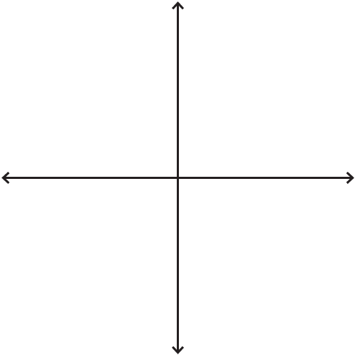

Generator
Gallery
Two by Two Generator
This thing helps you generate two by twos. Click on any text to edit it.

not focused on reception
focused on reception
not focused on intent
focused on intent
FOUND WORK,
NATURE LANDSCAPES
STRATEGIC
RHETORICAL
PERFORMANCES
(POLITICAL SPEECH)
ABSTRACTED,
NON-CONTINGENT
RUMINATIONS
SINCERE & HEARTFELT
RELATIONSHIP
TALKS
Download Image
Copy URL to clipboard
I like color
Two-by-Two Gallery
Examples from
Are.na
Loading gallery...